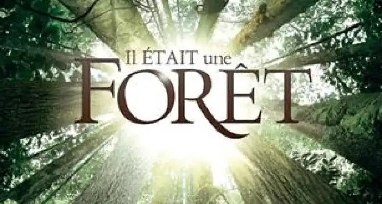

Once Upon a Forest [Book]
Discover the Wonder of Nature through the Book
Explore the magic of the forest through the book "Il était une forêt" by Francis Hallé. Immerse yourself in a fascinating adventure to discover the secret life of the forest ecosystem, where every tree is a protagonist and every rustling leaf a line of dialogue. This book is much more than a simple work, it's a poetic celebration of nature, an invitation to rediscover the splendor of our forests and preserve them.
Informations
| Type | book |
| Writer | Luc Jaquet |
| Publisher | Actes sud |
| Genre | documentary |
| Theme | nature |
| Number of pages | 240 |
| Release date | november 16 2013 |
Book cover
“once upon a forest”
"Every tree is part of the life of the forest.A forest is alive, and you could even say it's more alive than a man, because we know that if you cut it down, it won't grow back."- Francis Hallé
Synopsis
"Once Upon a Forest" is a captivating work authored by the renowned French botanist and explorer, Francis Hallé. The book takes readers on a literary journey through the mysteries and beauty of nature, with a primary focus on tropical forests. It provides a fascinating insight into the forest ecosystem, the wildlife, and the flora that make it up, while exploring the intricate interactions that sustain the balance of these unique environments.
What the book is about
This book is dedicated to the study of tropical forests, one of the planet's richest and most diverse ecosystems. Francis Hallé invites us to delve into the depths of these forests through a detailed exploration of their structure, biodiversity, and their crucial role in global climate regulation. The author also reveals the mechanisms that maintain the harmony of these ecosystems, highlighting the significance of interactions between plants, animals, and natural elements.
The journey into tropical forests described by Francis Hallé is enhanced by the illustrations and photographs that complement the text, providing the reader with a visual glimpse of the wonders of nature.
Its creation
Francis Hallé, a renowned French botanist and ecologist, dedicated a significant portion of his life to the study of tropical forests. "Once Upon a Forest" is the culmination of his years of observations, research, and expeditions in these extraordinary environments. The book is the product of his passion for nature and his desire to share his knowledge with the public.
Hallé writes with a poetic prose that mirrors his love for the natural world. His vivid descriptions and personal anecdotes make the reading accessible to everyone, whether they are science enthusiasts or simply nature lovers.
Conclusion
"Once Upon a Forest" is much more than a mere scientific work. It is a hymn to nature, an enchanting exploration of tropical forests and the wondrous complexity of the life that inhabits them.
Francis Hallé reminds us of the beauty and fragility of these crucial ecosystems for our planet.
This book is an invitation to discover, to reflect on our role in preserving biodiversity, and to appreciate the magic of nature.
Whether you are passionate about botany, ecology, or simply curious about the beauty of the natural world, "Once Upon a Forest" will take you on an unforgettable journey through tropical forests, where you will meet life in all its splendor.